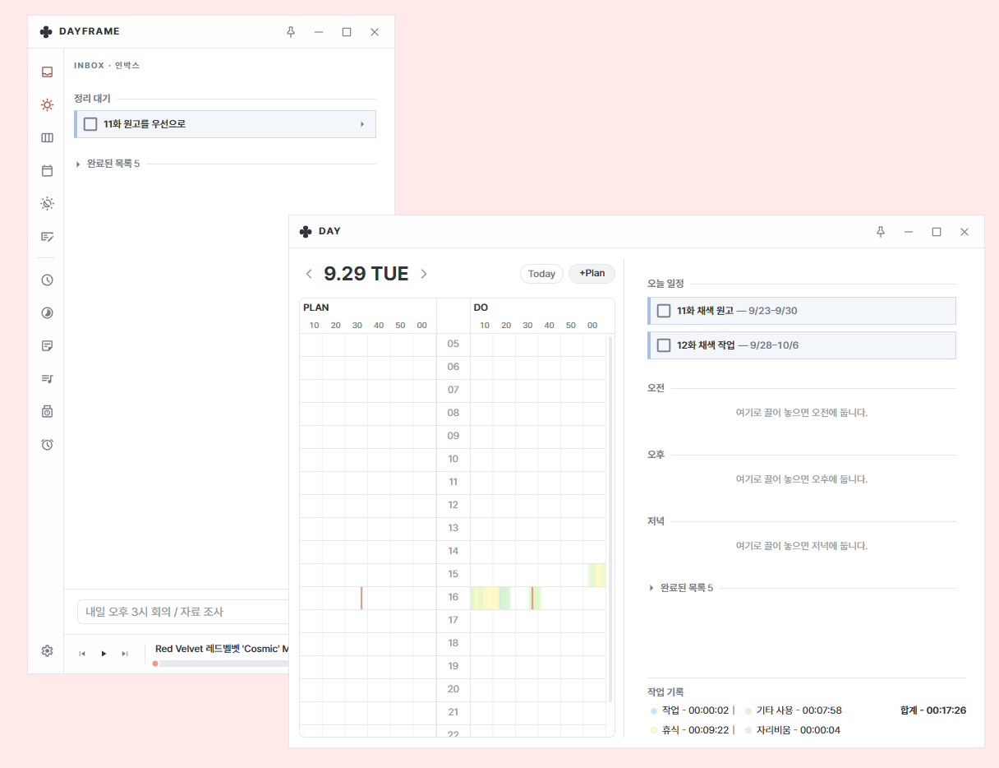
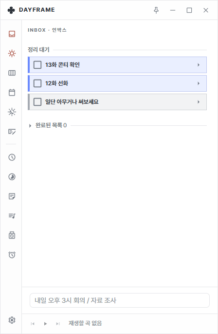
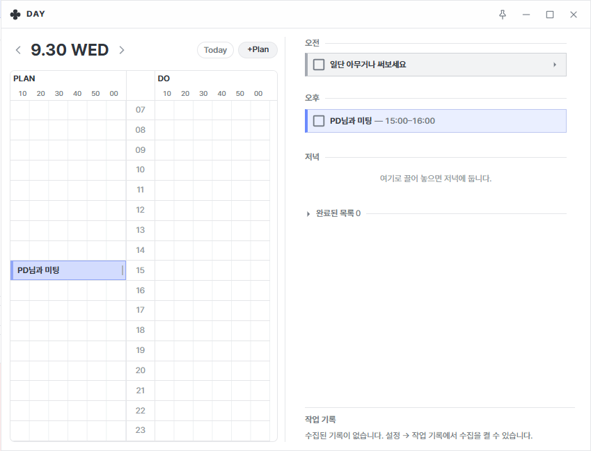
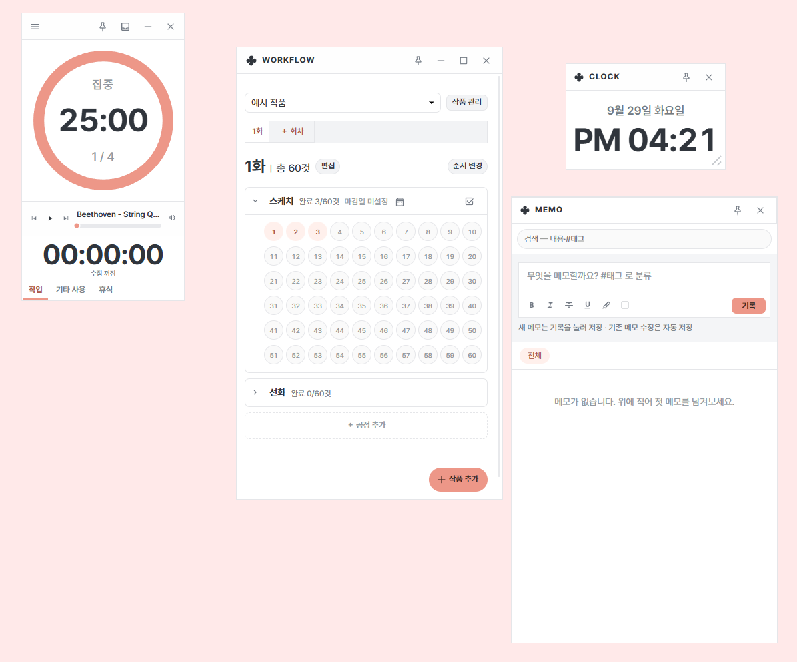

웹툰 작가를 위한 일정 관리
생각나는 일은 먼저 적고,
작업할 때는 필요한 것만.
일단 적고, 대략 언제 할지 정한 뒤, 시간이 정해진 일정만 타임테이블에 배치하세요.
- Windows 10·11 · macOS(Apple Silicon)
- 기록은 내 PC에 저장
- 무료

시간의 정확도를 필요한 만큼만 정합니다.
-

1 Inbox
떠오른 일을 판단하기 전에 먼저 적어 둡니다.
-

2 Anchor Time
정확한 시간이 필요 없다면 오전·오후·저녁만 정합니다.
-

3 Focus
작업할 때는 지금 할 일과 타이머만 꺼내 씁니다.
필요한 창만 꺼내 씁니다.
Workflow
작품·공정 단계 관리
Focus
할 일과 타이머만 작게
Memo
#태그로 빠른 기록
Habit
습관 체크와 알림
Time
시계·뽀모도로
Music
YouTube 재생목록
iCal
외부 일정 가져오기
Dayframe 0.2.5
데이터는 %APPDATA%\Dayframe에 저장되며 설정에서 백업할 수 있습니다.
코드 서명이 없어 Windows에서 ‘알 수 없는 게시자’ 안내가 나타나면 추가 정보 → 실행을 선택하세요.
macOS는 Apple Silicon(M 시리즈) 맥을 지원합니다. 자동 설치는 지원하지 않으며, 새 버전이 나오면 앱이 알려 주니 설치 파일을 직접 내려받아 주세요. 개발자 서명이 없어 처음 실행할 때 앱을 우클릭해 ‘열기’를 선택해야 할 수 있습니다.